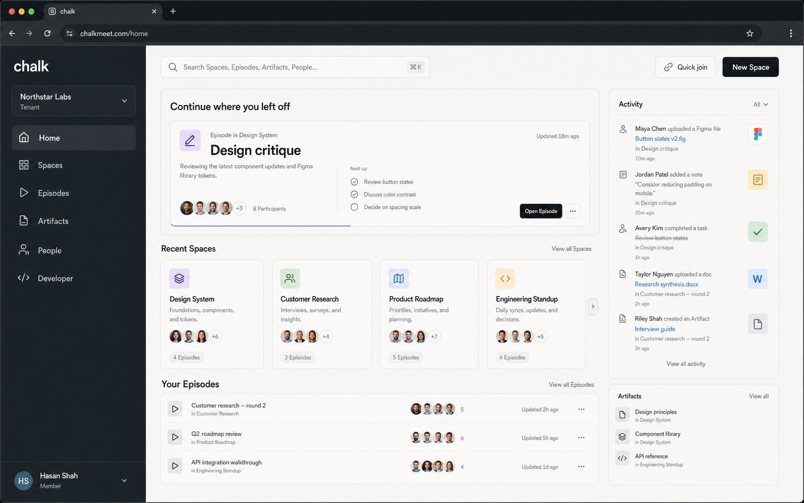

Recent Spaces, Episodes, Artifacts, and Quick join.
Chalk dashboard
A general collaboration product centered on durable Spaces, the Episodes inside them, and the context people leave behind.
4 states
Core first run
Account → Tenant → Space → invite or join
Collaboration
Product center
Developer is a secondary branch
Same origin
Browser boundary
No raw account token in the browser
S1 complete
Build status
Account, Tenant, boundary, and shell gate passed
The trusted Account and Tenant path now exists
Capabilities without a trusted path
The web app began without a protected shell, Dashboard Account client, authorized Tenant context, or customer dashboard routes.
Registration could not lead into atomic owner onboarding, and a normal Account could not discover its authorized Tenants.
Current stateOne recoverable collaboration product
An Account now signs in behind a same-origin boundary, creates and owns a Tenant atomically, reloads an authorized Tenant, and signs out cleanly.
S2 continues from authoritative onboarding state into the first Space. Developer setup still branches later.
Desired stateGate proof: the browser journey and the real boundary-to-Go-API journey passed, including idempotent replay and cookie-clearing logout.
The product feels like a collaboration studio

Home answers “where do I continue?” It does not lead with usage KPIs, infrastructure health, or credential management.
One shell, nine clear customer jobs
Durable places, their Members, settings, and history.
Tenant-wide immutable history and attendance.
Recordings and Transcripts with processing states.
Backed customer identities and Space assignments.
API keys, SDK setup, webhooks, and integrations.
Authorized, redacted audit history.
Identity, access, region, and supported defaults.
Dashboard identity and authentication state.
Three prerequisites make private UI trustworthy
Tenant ownership landed: one idempotent transaction creates the Tenant and owner-level Tenant access. Replay, conflict, rollback, isolation, and concurrency are proved.
Same-origin boundary landed: the web origin owns hardened cookies, CSRF and Origin checks, safe OAuth returns, cache policy, token stripping, trace propagation, and health.
Canonical contracts: Space, Episode, Role, Capability, Participant, Artifact, and Dashboard Account semantics land before private pages consume production data.
S2 carries authoritative onboarding state into idempotent first-Space creation, but general resource pages stay fixture-backed until S3 closes the canonical contract gate.
The execution path is gated at real seams
- S0 · Visual foundationShell, Home, Spaces, dialogs, mockup index, and responsive proof
- S1 · Account and TenantAtomic onboarding, same-origin boundary, protected identity path, and full seam gate
- S2 · First-Space onboardingAuthoritative resume state, idempotent creation, invite, and Quick join
- S3 · Canonical contractsSpace, Episode, Capability, lifecycle, history, and generated client migration
- S4–6 · Product depthSpaces; Episodes, Artifacts, People; then Developer and Tenant administration
- S7–8 · Prove and launchResilience, operations, acceptance, release gates, and approved production launch
Only independent UI-primitives and browser-boundary work run in parallel. Contract choices, integration, and release sign-off remain orchestrator-owned.
Completion is observable, not decorative
Release checks
- Core onboarding reaches a first Space without forcing an API key
- Every private request rechecks authorized Tenant context
- Space and Episode lifecycle laws survive concurrency, reload, and recovery
- One-time secrets never enter browser storage, URLs, logs, telemetry, or caches
- Desktop and mobile cover loading, empty, stale, forbidden, offline, and failure states
- Journey and W3C trace context reach the API and downstream boundaries
- Focused gates and
pnpm run gatepass before release
Out of scope: billing, plans, SSO, legal hold, Team or Workspace grouping, incident administration, and internal operations tools.